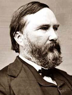

|
From the Scottish word for "rascals," the term scalawag was applied to the white
Southerners who cooperated with the Republican Party during Reconstruction.
Historians have overturned the common depiction of scalawags as no-good, poor
white trash traitors. Indeed, the Republican Party had no chance at all to
establish a presence in the South without the leadership and support of the
large and diverse group of white men who allied themselves with the party of
Lincoln during the years after the Civil War.
Although the scalawags ranged widely in terms of their social standing,
economic background, and political loyalties, they did share common beliefs.

James L. Alcorn
|
First and foremost, they wanted the South to enjoy a progressive and prosperous
economy based upon the benefits of free labor and industrialization. While the
wealthier scalawags of New Orleans and Atlanta looked forward to
government-sponsored subsidies and loans for railroad construction and textile
mills, the plain, hardworking farmers of North Carolina, Georgia, Virginia, and
Texas hoped the Republicans would make good on their pledge for debt-relief.
The Southern yeomanry, or small farmers, joined the Republican Party for
their own reasons. Many of them had been Union supporters during the war, and
resented their harsh treatment by Confederate citizens and soldiers. Others
wanted to help build a genuine two party structure in the South and share in the
benefits of healthy political competition. Most farmers never owned slaves and
resented the pre-war domination of the Southern slaveholding class. In every
southern state, they yearned to limit the power of the old guard with the help
of the Republicans. The yeomanry wanted to put slavery behind them, and to look
forward to the economic benefits of Unionism for themselves and their children.
This sentiment did not mean, however, that they were in favor of social equality
with the former slaves. Scalawags were not, like northern carpetbaggers, willing
to make much room for the hopes and expectations of the much larger African
American base of voters for the Southern Republican Party. Ultimately this
racism, along with corruption within the Party and violent attacks from white
Southerners, undermined the Republican party's future in the South.
At the beginning of Reconstruction, Republican leadership expected the Party
to be established with the help of a number of very fine scalawag leaders. One
example is James L. Alcorn of Mississippi. A lawyer and Whig politician before
the war, Alcorn served as a brigadier general in the Confederate Army. Returning
to Mississippi in 1865 Alcorn became a spokesman for the moderates in his state,
advocating racial cooperation and a willingness to forget the bitterness of the
past. Alcorn, who served both as a U.S. Senator and governor during
Reconstruction, decided to tie his political fortunes to the Republican Party.
He believed strongly that building up a party organization within Mississippi
and in the other southern states would bring stability and prosperity so
desperately needed in the region.
Like other scalawag leaders, Alcorn had to contend with factions and
divisions within his state's Republican party. If African Americans were
perceived as being given too much power and prestige, then white voters would
leave the party in droves. On the other hand, the freedmen made up the majority
of the Republican voters, and black Republicans demanded that they receive their
fair share of rewards and patronage positions. Elected governor in 1869 when
Mississippi adopted a new constitution, Alcorn made impressive gains in
improving life for his constituents, including the establishment of a public
|

James Longstreet
|
school system. He urged fellow Mississippians to accept and support the freedom
and political (but not social) rights of ex-slaves. Unfortunately for Alcorn,
intra-party rivalries, intrigues, fights and scandals dimmed the Republican
light in Mississippi as in most other Southern states by the early 1870s.
Another prominent scalawag was former Confederate General James Longstreet.
One of Lee's top generals, Longstreet joined the Republican Party immediately
after he was pardoned in 1867. Related through marriage to President Ulysses S.
Grant, Longstreet re-forged a warm friendship with Grant that had been
interrupted by the war. Throughout Reconstruction, Longstreet used his prestige
and high profile to urge fellow Southerners to accept and even welcome
reconciliation with the North. He served in a number of prestigious positions,
including surveyor of the port of New Orleans in 1869 and U.S. minister to
Turkey in 1880. Instead of helping to achieve the sectional harmony he hoped
for, Longstreet became a hated symbol of the white Southern traitor, and the
most notorious "scalawag" of all.
In the end, scalawag leaders of the Southern Republican Party were defeated
by the legacy of slavery and racism in their region. They were simply unprepared
for the extremely hateful and violent attacks upon their party from Democrats
bent on "redeeming" their states from the clutches of Republicans, as well as
from politically motivated terrorist groups like the Ku Klux Klan. By 1876 most
scalawags had returned to the Democratic Party; and most of those who stayed
with the Republicans did so only to receive the occasional patronage position
offered by the national government.
Source: Joan Waugh, ed., Facts on File Encyclopedia of American
History: Civil War and Reconstruction, 1856 to 1869 (New York: Facts on
File, 2003), 307-08.
|